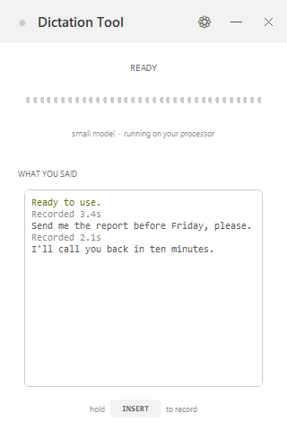
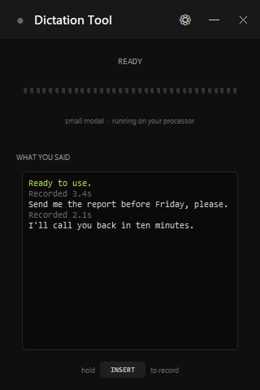
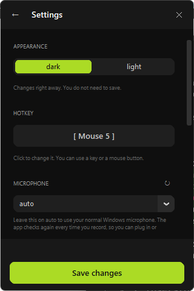
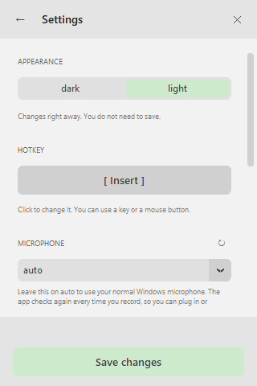
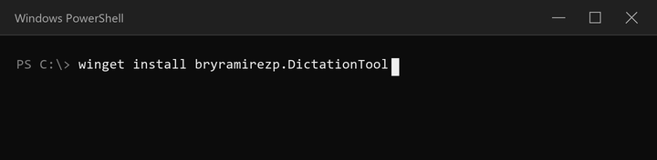

Hold a key, say it out loud, let go. Your words land in whatever app you are using. No internet, no account, no subscription.
Download for Windows
68 MB · Windows 10 and 11 · nothing else to install
All files and release notes
· install with winget instead
How it works
The speech recognition runs on your own computer using Whisper. Your voice is never uploaded. You can pull out the network cable and it still works.
What it looks like




How it compares
| Dictation Tool | Windows Voice Typing | Dragon | Otter.ai | |
|---|---|---|---|---|
| Price | Free | Free | Paid | Free tier, then paid |
| Works offline | Yes | No | Yes | No |
| Needs an account | No | No | Yes | Yes |
| Types into any app | Yes | Yes | Yes | No |
| Voice commands | No | Some | Yes | No |
| Open source | Yes | No | No | No |
Dragon is bought mostly for controlling a computer by voice, and this does not do that. It dictates text, and it does that part for free and without a connection.
Getting it
It installs for you only, so Windows never asks for an administrator password, and it offers to start with Windows if you want that.
The installer is not signed, so Windows may show a blue box saying "Windows protected your PC". Click More info, then Run anyway. Signing a program costs money every year, which is a lot for a free tool.
The first time you open it, it downloads the speech model — about 460 MB, once. After that it never needs the internet again.
winget install bryramirezp.DictationTool

Not live yet. The package is waiting for Microsoft to merge it into the winget catalogue (pull request 417700), which usually takes a few days. Until then the command says "No package found matching input criteria" — use the download button above.
The download runs on your processor. If you have an NVIDIA card and want it much faster, run it from the source code instead:
git clone https://github.com/bryramirezp/dictation-tool.git cd dictation-tool py -3 -m pip install -r requirements.txt nvidia-cublas-cu12 launch.bat
Questions
Yes. The first run downloads the speech model, about 460 MB. After that it never needs the internet again, and your voice is processed entirely on your own machine.
Yes, and it is open source under the MIT license. No account, no subscription, no paid tier, no trial that runs out.
For dictation, yes. You hold a key, speak, and the text is typed for you. It does not replace Dragon's voice commands for driving Windows by voice.
Windows Voice Typing sends your audio to Microsoft and needs a connection. This runs the model locally, works with no connection at all, and lets you pick a larger and more accurate model than the built-in one.
Spanish, English, Portuguese, French, German and Italian. You choose one rather than letting it guess, which makes it faster and stops it from getting the language wrong on short recordings.
No. The download runs on your processor. If you have an NVIDIA card and install from the source code, it can use it and get much faster.
No. Nothing leaves your computer. The microphone is only open while you hold the key, so nothing is listening the rest of the time.
Insert by default, and you can change it to any key or an extra mouse button. Avoid normal letters: the key is not blocked, so choosing q would start a recording every time you typed one.